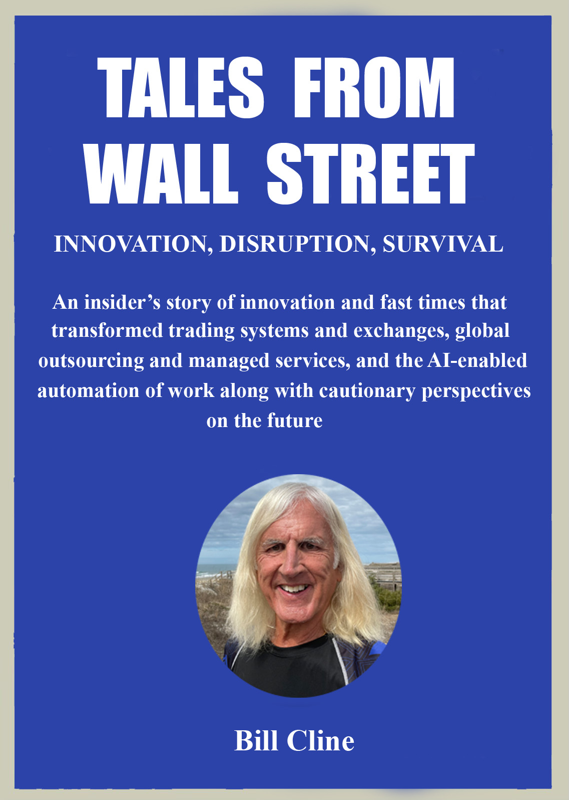

The Wall Street Fast Lane
No matter what you saw in books or movies about Wall Street in the '80s and '90s it was much wilder than that. Weed and cocaine were ubiquitous, and like alcohol they were often part of the business day, business deals, and after work entertainment. But it was also a period of transformational innovation and market disruption. Fortunes were made, some were lost, and an entire ecosystem of products, services, and businesses fed off the financial largesse of Wall Street.
It was market disruption and a digital transformation of trading systems, market data, and exchanges. Exclusive and expensive clubs, bars, restaurants, and luxury real estate, jewelry, clothing, and car retailers spent all year cultivating relationships with superstar traders and senior Wall Street executives. Like hungry western bears eagerly awaiting the all-you-can-eat buffet of the annual salmon migration, everybody on and around Wall Street counted down the days to awards of six, seven, and eight figure bonuses at big investment banks and funds.
Financial beneficiaries extended well beyond traders and top executives to include IT and software professionals developing and running the advanced technology, applications, and algorithms that enabled success in the markets. Also benefiting were the skilled middle and back office professionals who processed trades and maintained real-time trading positions, risk exposure, P&L summaries, and audit trails to appease regulators.
There were plenty of trading and investment management profits to share on Wall Street during these years, and the often life changing year-end bonuses were expected by professionals at all levels. Often one’s annual bonus was larger than the guaranteed yearly salary, the size tied to measurable performance excellence versus peers in someone’s given role. Artificial preferences regardless of ostensible justification were nonexistent, and excuses didn’t work on Wall Street or at the IT, data, or big consulting firms selling to financial services institutions.
Employees sometimes expected large bonuses who mistakenly thought they were better than they were, but they usually weren’t around for long. Wall Street ran on numbers, and tangible performance results were almost all that mattered for compensation and promotion decisions. Performance might mean trading profits for a trader, investment returns for an investment manager, or trade processing speed, efficiency, and cost optimization in operations. Performance and compensation decisions were objective, transparent, agnostic, and unaffected by unsupported subjective arguments.
A smaller than expected bonus was disappointing, but most employees accepted they needed to improve performance relative to peers. No bonus in a given year was a subliminal message to improve performance quickly or call your favorite headhunter. Low or no bonuses were usually a precursor to termination, part of the yearly culling of the bottom 10% of performers.
Wall Street’s high-performance culture was survival of the most deserving, and the objectively measured preference-free pursuit of excellence produced superior business outcomes and happier, more productive employees. Nobody I ever knew on Wall Street cared about race, color, nationality, sex, gender, academic credentials, politics, or who somebody slept with. Wall Street in the '80s and '90s was a highly competitive meritocracy, a high-performance work culture where with enough talent anybody could be successful.
Wall Street employees at all levels were well compensated as were the technology, data, software, application, and professional services vendors who created and implemented the innovations that fueled lucrative Wall Street profits. My first trading system company made stand-alone market data terminals obsolete by introducing integrated “video switching” systems for traders to access real-time market data, analytics, and applications. Then we proceeded to make video switching obsolete with digital trading systems supporting sophisticated applications and algorithms running over high-speed networks. Digital disruption was worldwide, and it forever changed global capital markets and scrambled the list of winners and losers.
As a young trader in my 20s I clutched two different telephone handsets while “squawk boxes” streamed live trade talk from market makers and I obsessed over stacks of computer screens flashing prices and trade sizes. The size and cacophony of noise on a big trading floor with thousands of traders screaming was overwhelming to outsiders. Special acoustic treatments made sure traders shouting to each other could be heard across the room, specialized lighting and ceiling designs minimized screen glare, and customized HVAC systems dissipated heat from computers, screens, and thousands of agitated human bodies in an enclosed space.
At first traders filled out paper trade tickets on the trading floor that were then manually entered into trade processing systems off the floor. I realized those slow manual processes couldn’t last much longer on Wall Street after learning about new software and hardware advances that made direct trade entry and automation possible. I thought about how technology could change trading and market data until I had a chance to change it myself as an entrepreneur. High-speed computers, real-time data and networks, trading applications and algorithms, and new electronic exchanges were both enablers and outcomes of the digital transformation of Wall Street.
I stopped trading just in time and started designing and selling state-of-the-art real-time trading and data distribution systems that eventually made most human traders obsolete. But my trading experience helped me think of new game-changing IT innovations in capital markets and global professional services. I looked for ways to turn art of the possible into cost-effective reality, selling and evangelizing the future. Digital trading systems and new electronic markets spread worldwide, transforming 200 years of financial market history and rendering large trading floors unnecessary.
Two of my companies designed and developed the trading and market data distribution systems that made trading faster, cheaper, and highly automated. Previously stereotyped and ignored mathematicians and software engineers became highly compensated “quants,” “data scientists,” and new members of the cool crowd. They used advanced mathematics along with real-time and historical market data to develop trading strategies they turned into applications and algorithms running on ultra high-speed computers and networks.
Wall Street paid big premiums for milliseconds of speed advantage, so a close partnership formed with the computer, networking, and data companies leading the global performance race. Wall Street embraced any innovation that created competitive advantages, buying from and often investing in the companies delivering those new products and services. My two system companies integrated cutting-edge hardware, software, and network infrastructure to create trading systems we installed on trading floors worldwide. As trading system innovation slowed, I moved to consulting and sold long-term outsourcing and managed services contracts to run and improve trading systems and other front, middle, and back office operations for clients.
Every major IT vendor had dedicated sales teams focused on Wall Street and financial services. They wanted the revenue but also the drug-like high that came from winning intense competitions run by smart and demanding buyers, sales credentials they leveraged in marketing campaigns. In those days real drugs were also pervasive in financial services and sometimes played a role in how those Wall Street sales were won. It was all part of the game in the '80s and '90s so you had to draw personal and ethical lines, but it was also a period of unparalleled digital innovation.
I developed close relationships with senior trading and IT executives on Wall Street and in the Silicon Valley tech industry who supported me, especially at my smaller entrepreneurial companies. They introduced me to influential people and decision makers I didn’t already know, and I reciprocated by taking them to great dinners, Broadway shows, concerts, and the hottest nightlife they could handle. I became more visible in the national media than any other capital markets consultant, and my TV, radio, and print interviews gave me added credibility with clients and strategic partners.
Wall Street’s real-time data distribution and algorithmic innovations spread to other industries as the price of the enabling technologies decreased and the supply of skilled resources expanded. Vivek Ranadive, one of my early trading system competitors who became a friend, went on to promote the “real-time enterprise” and “the power of now” across industries after founding TIBCO Software. I eventually moved beyond financial services as well, introducing new process automation software “bots” and AI-enabled “intelligent automation” across industries. But the origins all traced back to the real-time trading infrastructure and high-speed datafeeds that fueled the digital transformation of Wall Street in the '80s and '90s.
The trading floor had always been an adrenaline rush since my first exposure as a recent college graduate. I wouldn’t have lasted long as a traditional office worker but I seriously considered a music career. I began playing in bands when I was 15, making enough money to help pay for my Duke University education when my family couldn’t have afforded it otherwise. I was still performing and recording while attending college, but my Warner-Elektra demo record wasn’t getting much play. Disco was becoming the hot new music genre, but I was a rocker after having started out in jazz. So I accepted a management trainee job at a big bank after graduating from Duke, but I wasn’t happy there until I discovered trading.
Headhunters were relentless on Wall Street and sometimes did devious and ethically questionable things to poach talent. Salaries were high to compensate for the mental and physical stress and pressure, but it was still hard to attract and retain good people since other firms were always hiring and recruiters circled like sharks. Everybody working on Wall Street regardless of role or level had knowledge in short supply and strong cards to play for compensation increases and promotions.
My work designing digital trading systems and launching new electronic markets made trading and investing cheaper and more accessible for everybody, eliminating most trading commissions. Trading innovation and alternative exchanges were spurred on by new regulations that eliminated legacy rules that had protected members-only institutions like the NYSE at the expense of investors. New markets were more transparent, liquid, and anonymous, introducing alternative execution methods and extending trading hours. Market structure innovation created new options for executing trades that resulted in better prices and lower trading costs, benefitting both retail and institutional investors.
Wall Street money also sponsored many charitable events that raised millions for worthy causes, characterized by wealthy donors as “giving back.” But it usually seemed the charitable cause was secondary to opportunities for rich and successful people to party in some iconic hotel’s grand ballroom. I went to dozens of “charity galas” and award ceremonies “honoring” whoever had donated the most money to the cause that year. I bought expensive tables at hundreds of them over the years to invite my clients. Charities were another beneficiary of the Wall Street ecosystem of money and wealth.
Performing on stage helped me develop the confidence to interact with senior executives and head traders at a very young age. My extensive network of business relationships was nurtured through social interaction and entertainment my competitors couldn’t match. I regularly took clients and alliance partners to cool and exclusive restaurants and clubs in New York, Chicago, London, Paris, Madrid, Tokyo, Sydney, Shanghai, and Hong Kong. Drinks and a great dinner were a given, but the night in those years was usually just beginning after dinner.
I developed connections at hot clubs, bars, and restaurants few people knew about and even fewer could get into, and I got tickets to sold out Broadway shows, museum openings, and private suites at concerts and sports events. I did whatever I could to win big contracts, but I always played by the rules albeit with a liberal interpretation of some gray areas. During the '80s and '90s there were no real red lines other than money changing hands. As policies and business norms changed in the 2000s I had to change too, but there were fewer close client relationships, less camaraderie with colleagues, everybody had less fun, and business outcomes suffered.
Today’s highly restrictive rules for client socialization in consulting constrain collaborative innovation and strategic alignment with clients like I developed with them. After work socialization and entertainment was an effective way to foster those relationships, and it made business more productive and fun. Now cost caps and extreme policy restrictions on permissible client entertainment can make going to Chick-fil-A for a chicken sandwich and Cookies & Cream milkshake look like a decent option. It’s an overreaction to a nonexistent problem.
Most of my product, data, and service innovation ideas were my own, but sometimes I made the ideas of others real as I did with the Intercontinental Exchange (ICE). Successful selling on Wall Street meant winning tough functional, technical, and price comparisons in a smart, demanding risk/return culture. Cost was unimportant for any functional, technical, or service differentiation that enabled tangible advantages in the market. The target ROI for a successful innovation investment in capital markets could be realized in a single lucrative trade or by avoiding a big downside risk.
I was good at seeing market and operational inefficiencies and envisioning new product and service innovations to address them, and I learned enough about cutting-edge IT to know what was technically and functionally feasible. Being creative, bold, and confident in capitalizing on market opportunities and solving challenges led to my most impactful new product and service ideas that changed the financial markets.
After the digital transformation of Wall Street trading systems that began with my first new digital system Triarch, the marginally controlled chaos I loved on the trading floor was replaced by computers, networks, datafeeds, algorithms, and applications running in equipment rooms. There were many fewer traders, much smaller trading floors, and traditional exchanges fought for survival against new market entrants open for longer hours that offered faster, cheaper, more liquid, and more transparent trading.
Now the real action was in the flashing lights and perpetual hum of high-speed IT infrastructure and cooling systems running in secure, high-tech equipment rooms. Computers were faster, mostly smarter, could analyze infinitely more prices and markets simultaneously, and made fewer mistakes than human traders. The computers also didn't drink or do drugs, complain, screw the employees, succumb to stress requiring pharmaceuticals or therapy, or get paid millions in salary and bonus only to still demand more.
Wall Street and global capital markets operated at a pace and with pressures few people could conceive of or endure, but some like me thrived in the adrenaline-fueled lifestyle if you avoided too many crutches. Weed and alcohol had long been part of the Wall Street scene, but the surge of cocaine use in the 1980s was different and ruined lives. The financial and personal rewards of working on Wall Street were diverse and many, but it came at a cost. I was lucky the era finally ended because the constant travel, stress and pressure, and too many late nights out only to do it all again the next day were taking a physical and mental toll on me too.
By the mid-1990s Wall Street life was starting to settle down while new regulations kept fostering new cycles of innovation. Crossing and matching systems and investment bank “dark pools” that internally matched customer trades with a bank’s own trades proliferated as investors looked for best execution. New alternative electronic markets were faster and provided more trade execution alternatives, and it set the stage for sophisticated trading and execution algorithms and applications that could outthink and outmaneuver human traders with long-term implications.
High-frequency algorithmic trading expanded from stocks into bonds, derivatives, commodities, and foreign exchange. Most trades were now executed by “smart algorithms” that accessed and compared fast, liquid electronic markets to mathematically optimize “best execution” that was measured and reported. “Price improvement” from better trade executions was particularly impactful on large trades like those of big institutional investors and mutual funds, so investors large and small benefited.
IT investment budgets were effectively unlimited for market makers and high-frequency arbitrage traders to win the speed race, where shaving milliseconds off data delivery times led to market insights and low-risk trading profits. Highly specialized hardware, software, data, networking, and services vendors sold financial institutions the means to compete and win in the markets. Everybody benefited, including me.
The stately marble environs of the NYSE and the amphitheater “trading pits” of the Chicago commodity and options exchanges became expensive physical liabilities. Giant trading floors were costly to maintain and enhance but no longer served any real purpose. They were good TV sets for shows like CNBC’s Squawk on the Street at the NYSE where I did interviews, but nothing significant happened on them any longer after trading and market making became electronic and automated.
Maintaining the floors diverted the management attention and money needed to fund innovation and growth, and new alternative exchanges took more and more market share from traditional exchanges. The innovators made acquisitions, traded more asset classes electronically for more hours, expanded into new geographies, and prospered. Legacy exchanges that didn’t adapt either faded into oblivion or were acquired by the winners.
The Intercontinental Exchange, one of my new startup clients that our project team brought into existence, ultimately acquired my former client NYSE. NYSE leadership dismissed my warnings about competitive threats for too long, never transforming their IT infrastructure or developing an effective growth strategy. NYSE stayed a private members-only club while NYSE members became dinosaurs. Meanwhile, publicly traded European exchanges used their investment capital to make acquisitions, fund global and asset class expansion, and sign strategic alliances with other exchanges.
As the '90s came to a close I had a front row seat to the separation battles of Andersen Consulting (AC) from Arthur Andersen (AA) and the global AC re-branding as Accenture preceding the blockbuster 2001 IPO. I’ll share the inside story of how we won the right to separate from AA along with previously untold details of intrigue and political maneuvering. Billions of dollars were at stake, and how we prevailed in arbitration and then executed a global re-branding and IPO in little more than a year will be on business school curriculums for many years.
It was one of the fastest, most complex, and highest value global business transformations ever undertaken. You’ll hear about the Andersen Worldwide global partners meeting in Paris where our future was decided and inside AC strategies to win in the International Chamber of Commerce arbitration. I was the long-time global client partner for Accenture’s lead investment banker Goldman Sachs, and I represented financial services as the capital markets managing partner on the roadshow marketing Accenture IPO shares to big institutional investors.
The Accenture IPO was only 2 months before the 9/11 terrorist attacks. I was in New York City on 9/11, only surviving through a highly improbable twist of fate. It involved a scheduled and then abruptly postponed London trip followed by an unplanned stop at my office that morning before going to the big market data conference my capital markets practice was sponsoring at Windows on the World. I survived while hundreds of colleagues, clients, and friends at the conference and working in the towers didn’t. Windows on the World was on the 106th floor of One World Trade Center, and nobody escaped from up there. They were all victims of senseless ideological extremism by Islamic terrorists who killed innocent people just going to work, all clueless about their bullshit cause or grievance.
In the weeks after 9/11 Accenture helped hundreds of companies and the city of New York recover even as we dealt with our own personal and professional losses. The region’s telecommunications and network infrastructure in lower Manhattan was destroyed, and the global financial industry would have collapsed without data and communication links between New York and the rest of the world reestablished.
Nothing was ever the same after 9/11, from flying to just getting through building security to meet with clients. I still have a lot of bitterness, unable to forget seeing Muslims in many countries dancing in the streets celebrating 9/11 and the death of so many friends and colleagues. It took me time to come to terms with how close I came to dying myself that day and would have left behind a wife and one-year-old son. The events of 9/11 prompted me to leave New York and move to South Carolina in 2003, but I still flew to New York or somewhere else in the world every week for another 16 years.
I resigned as the Accenture capital markets global managing partner in December, 2007, tired of the travel and how the company had changed after the IPO. I did independent consulting, created and taught capital markets training seminars, ran my vintage sunglasses business, and served on boards before joining KPMG in 2012 and leading Intelligent Automation. I was selling cutting-edge AI-enabled process automation business solutions long before public awareness of AI grew after the launch of ChatGPT in 2022.
KPMG let me explore my ideas for using software process automation, algorithms, and AI to create a new, highly automated managed service for regulatory compliance, but I was frustrated by audit firm independence restrictions so once again I had to pivot. That became the Intelligent Automation strategic growth initiative and one of the firm’s biggest innovation investments. But while I enjoyed leading that and got KPMG much better known as a technology consultant I discovered that business life and norms had changed, and not for the better.
The preference-free meritocracy of Andersen Consulting and Accenture had given way to institutionalized preferences for special identity groups and “diversity goals.” Diversity goals became de facto mandates and effectively quotas in hiring, promotion, and compensation decisions. I didn’t like it nor did high performers who lost out to others with clearly inferior qualifications and performance metrics. Such artificial gaming of the merit system would have changed my own career progression and slowed the pace of innovation.
Most business outcomes suffered, and top leadership was too isolated from rank-and-file employees to see the widespread dissatisfaction with the erosion of demonstrated performance as a guiding principle. Ensconced in top floor offices they mistakenly believed that employees universally welcomed HR corporate platitudes celebrating diversity and preferences to achieve it.
Promotions of less qualified and sometimes clearly unqualified individuals into senior roles elicited much internal chatter, and more high performers not in an advantaged identity group started resigning. Senior managers understandably lost faith that superior performance would earn them admission into the partnership, a principle that was fundamental to Andersen Consulting’s remarkable growth. KPMG wasn’t alone tipping the scales to achieve diversity goals, and it wasn’t much better elsewhere back then other than in entrepreneurial ventures and the tech industry.
Surviving and thriving on Wall Street in the '80s and '90s was an amazing experience that established the foundation of my entire career. It was life in the fast lane personally and professionally, but it was also an unprecedented period of innovation, market disruption, and the digital transformation of trading, capital markets, exchanges, and global professional services. Here’s my story…
